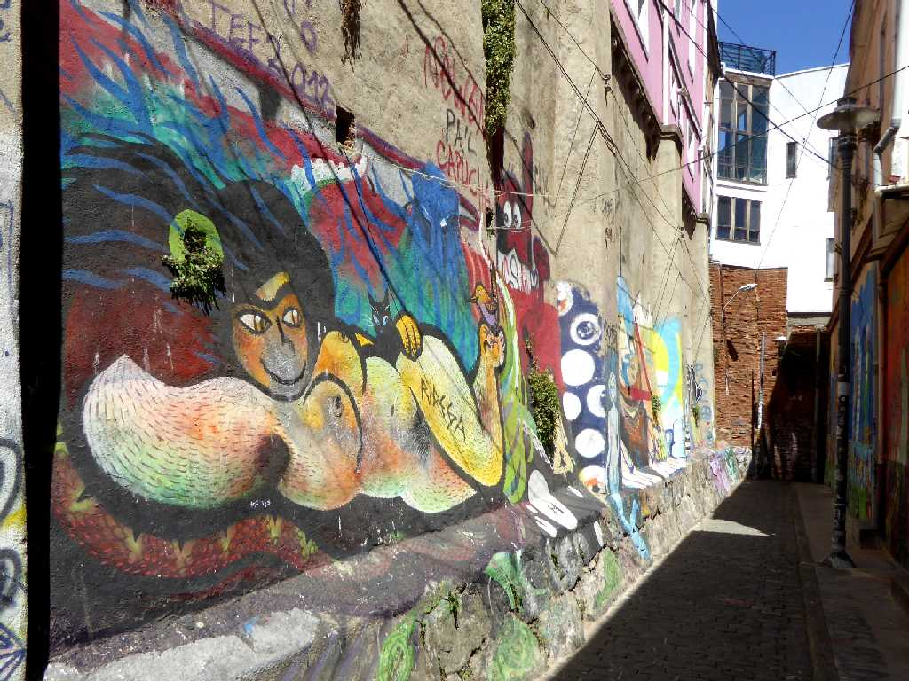
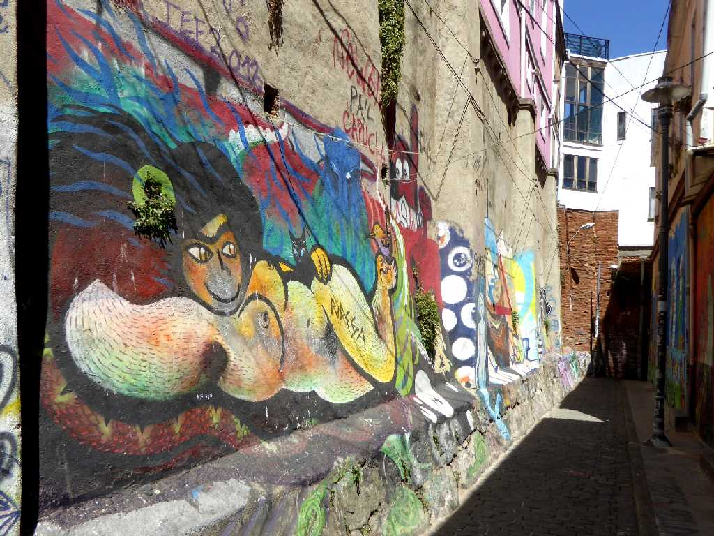
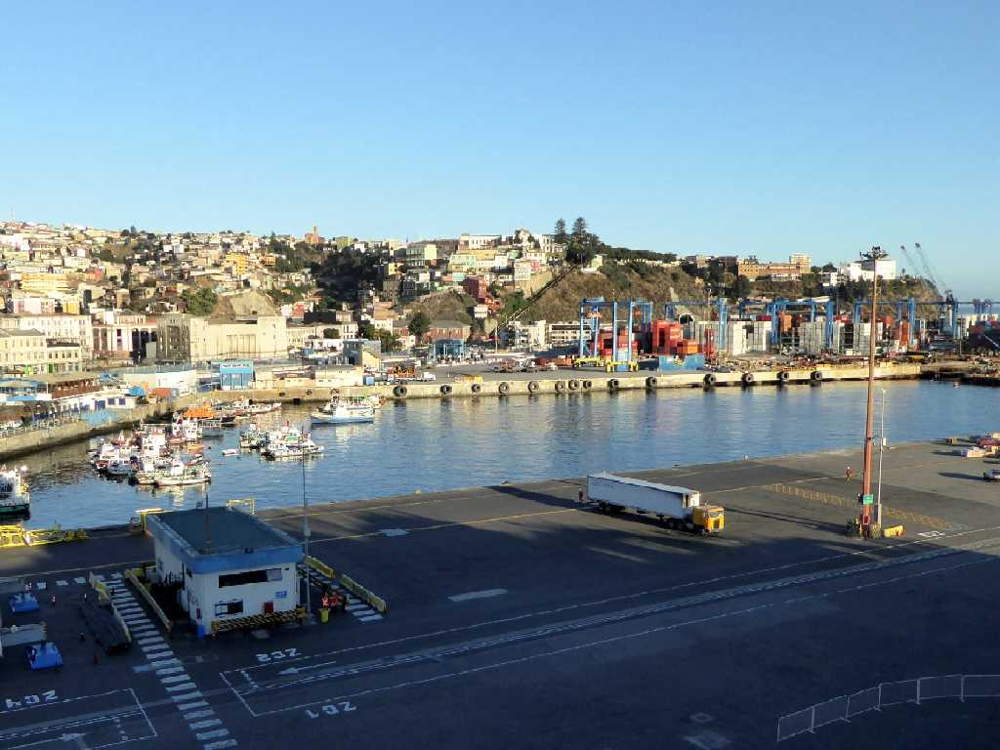
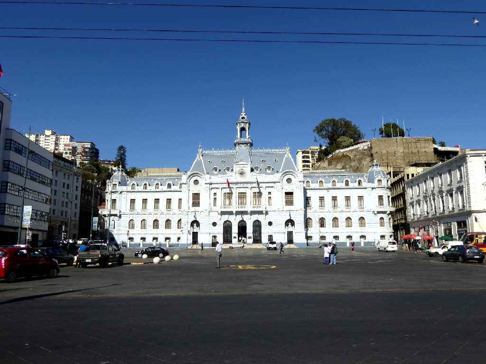
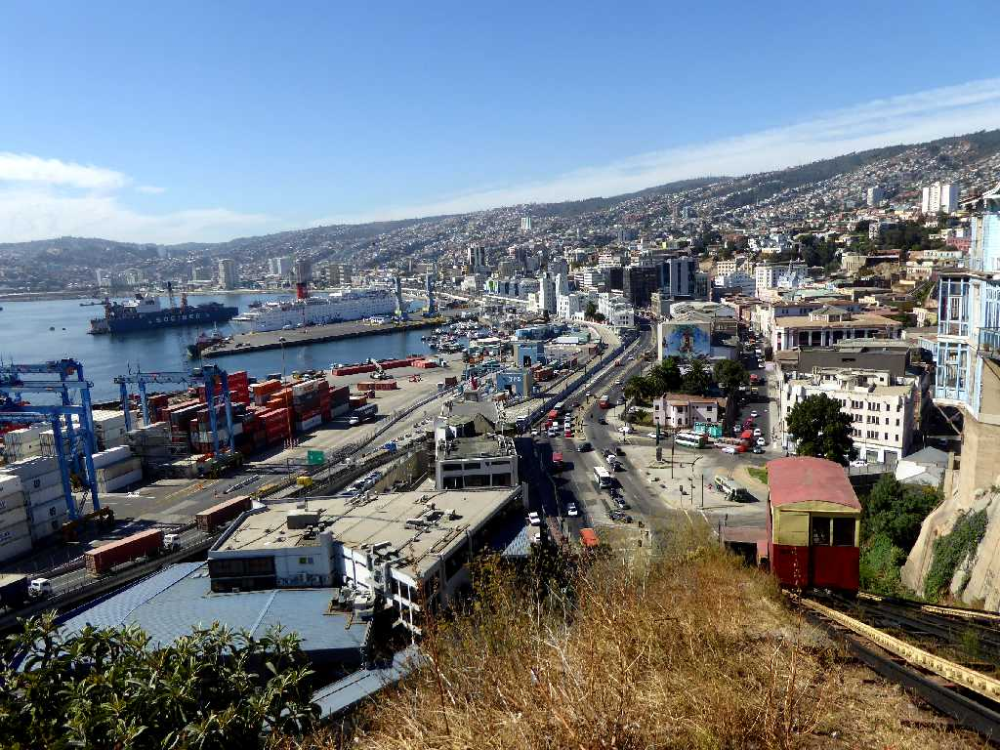
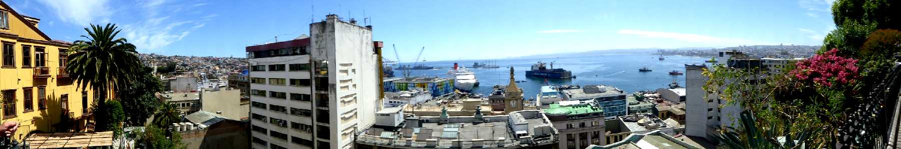
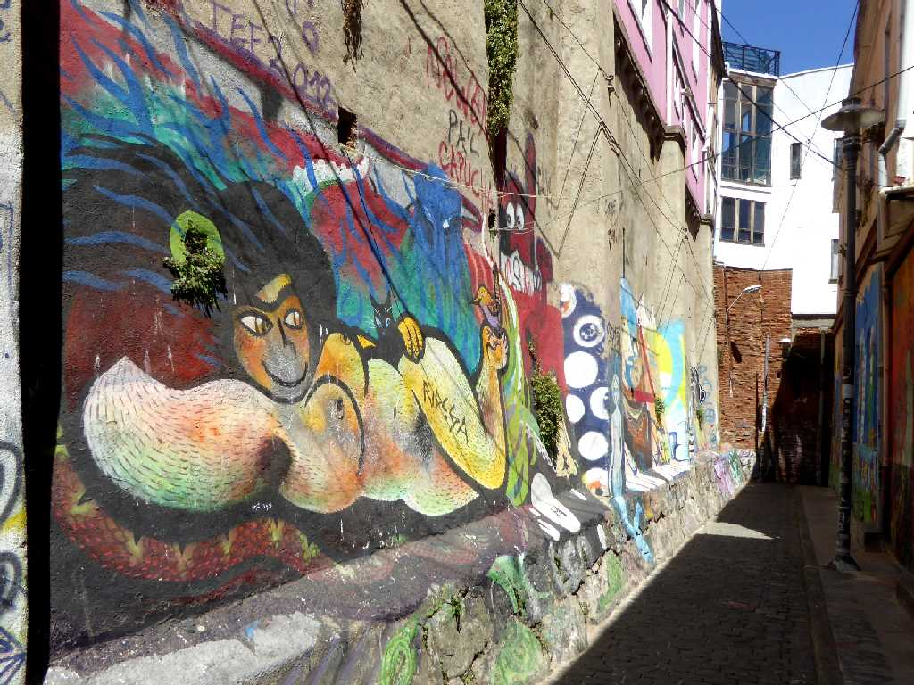
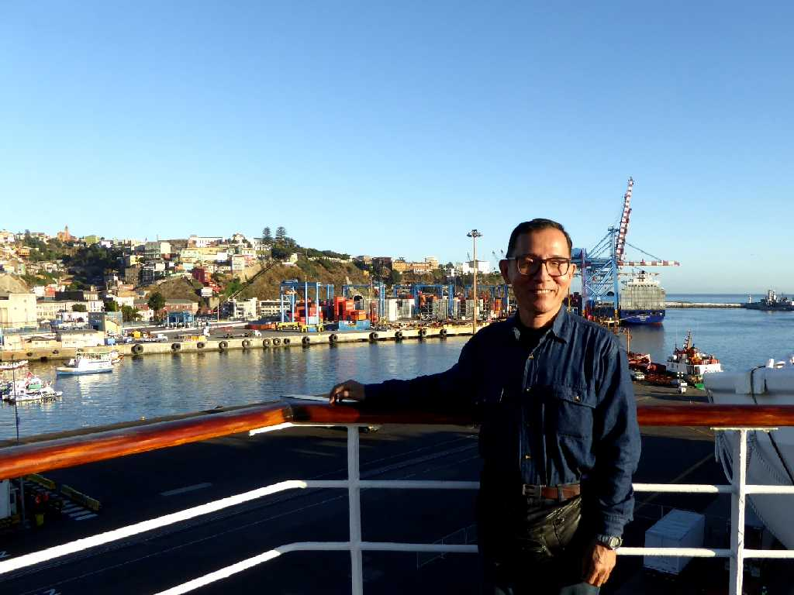

Port Valparaiso
港からスペイン語で天国の町と云われるバルパライソ中心街を望む

Plaza Sotomayor Valparaiso
バルパライソ中心街

Ascensore Port Artillería Valparaiso
アセンソールでアルティジェリアの丘に上り中心街と港を望む

Port Concepcion Valparaiso
コンセプシオンの丘から中心街と港を望む

Art Valparaiso

February 26 2016 Port Valparaiso
地球一周の船旅出港７２日目３３,７１９ｋｍ航行しバルパライソ港に着岸